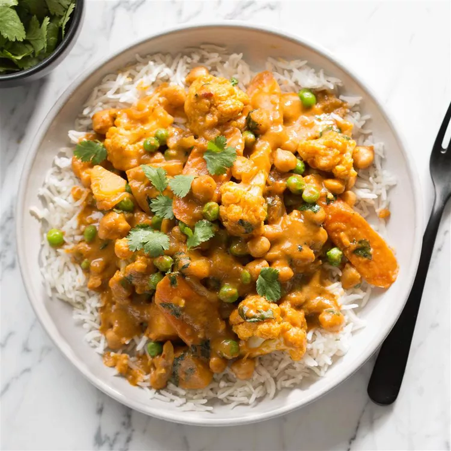

Easy Recipes
Recipe 3: Crazy Creamy Chickpea Curry

Description
This quick creamy vegan coconut chickpea curry is a super easy and speedy recipe that’s big on flavor.
With tomatoes, coconut cream, and the perfect blend of spices, it’s so creamy and filling!
This chickpea curry is bound to be a healthy dinner staple for your family, whether you’ve been vegan for years or are just trying out Meatless Monday!
Ingridients
- 1 tablespoon coconut oil
- 1 medium yellow onion, thinly sliced
- 1 tablespoon minced fresh ginger root
- 4 cloves garlic, minced
- 2 tablespoons mild curry powder
- ¼ teaspoon red pepper flakes
- 2 ½ cups vegetable broth
- 2 tablespoons reduced-sodium soy sauce or tamari
- 2 tablespoons pure maple syrup
- 2 tablespoons tomato paste
- ¾ pound Yukon Gold potatoes, cut into 3/4-inch pieces
- 1 large carrot, sliced diagonally 1/4 inch thick
- 4 cups large cauliflower florets
- 1 (15 ounce) can chickpeas, rinsed and drained
- 1 cup coconut milk
- ¼ cup chopped fresh cilantro, plus more for garnish
- ½ cup frozen peas
- Salt to taste
- Cooked basmati rice
- 1 tablespoon Sriracha chile sauce
Steps: How to Make Crazy Creamy Chickpea Curry
- Step 1: Melt coconut oil in a heavy 4-quart pot over medium heat.
- Step 2: Saute onion until lightly browned, 5 to 7 minutes.
- Step 3: Add ginger and garlic and saute until fragrant, about 30 seconds.
- Step 4: Add curry powder, pepper flakes, broth, soy sauce, maple syrup, and tomato paste and stir.
- Step 5: Add potatoes and carrot, cover pot, and bring to a boil. Immediately reduce heat to a simmer and leave lid ajar.
- Step 6: Cook just until potatoes are tender, about 10 minutes.
- Step 7: Add cauliflower, chickpeas, coconut milk, and cilantro. Stir gently to incorporate.
- Step 8: Return to simmer with lid ajar and simmer just until cauliflower is tender, 5 to 7 minutes.
- Step 9: Fold in peas and cook until heated through, about 1 minute.
- Step 10: Remove from heat and season with salt, if needed.
- Step 11: Serve with steamed basmati rice and, for those who'd like more heat, sriracha sauce. Garnish with cilantro.